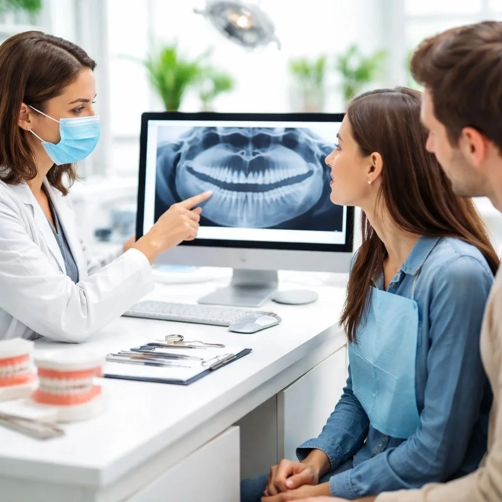

28 September 2026

There is so much hype surrounding invisible aligners today. From social media and advertisements to celebrities and influencers, clear aligners are often presented as the modern alternative to braces.
But when patients ask me, “Doctor, should I get aligners or braces?”, my answer is not always the same.
Because the real question is not:
“Which one is more popular?”
The real question is:
“Which one is right for your teeth?”
As an orthodontist, I strongly believe that treatment should begin with diagnosis, not with choosing an appliance. There are patients who are excellent candidates for clear aligners, and there are patients for whom braces may provide better control.
In fact, the American Association of Orthodontists also emphasizes that there is no single orthodontic appliance that is right for every patient; the choice depends on the malocclusion, treatment goals and individual needs.
So, when comparing aligners vs braces, let's look at the actual clinical situations where one may have an advantage.
When Can Clear Aligners Be a Better Option?
1. Patients Who Cannot Tolerate Conventional Metal Wires
Some patients have concerns about metal orthodontic appliances, including sensitivity or nickel allergy.
For appropriately selected patients, clear aligners can provide an alternative to conventional fixed braces, without using traditional archwires.
The aligner is custom-made to fit over the teeth and progressively guide them towards the planned position.
2. Certain Molar Distalization Cases
Molar distalization means moving the back teeth backwards to create space or correct certain bite relationships.
This can be an effective application of clear aligner therapy in carefully selected cases because the aligner can engage multiple teeth while directing movement of the planned tooth or teeth.
However, this does not mean every distalization case should automatically be treated with aligners. Recent systematic reviews show that clear aligners can achieve maxillary molar distalization, but the amount of movement achieved can vary considerably from the planned movement, particularly when larger movements are prescribed. Attachments, elastics or skeletal anchorage may sometimes be required.
This is why treatment planning matters more than the brand of aligner.
3. Selected Deep Bite Cases
Deep bite is another situation where aligners can be useful.
One of the movements involved in correcting a deep bite is vertical tooth movement, including intrusion. In carefully planned cases, aligners can provide a comfortable alternative to fixed appliances with an anterior bite plane.
I have had patients come to me after having a fixed anterior bite plane placed who complained that they were finding it difficult to pronounce certain words, eat comfortably or adapt to the appliance.
For appropriately selected patients, aligners can be a useful option.
But again, “aligners are good for deep bite” does not mean every deep bite should be treated with aligners. The exact cause and mechanics of the bite need to be assessed first.
4. Patients Who Play Sports or Have an Active Lifestyle
Think about someone who plays contact sports, works out regularly or has a very active lifestyle.
With fixed braces, brackets can be damaged or become uncomfortable following trauma to the mouth.
Aligners can sometimes be a more convenient option for these patients, particularly when appropriate mouth protection is also used for sports.
I also see patients who tend to clench their teeth while lifting weights or during intense physical activity. In selected cases, avoiding conventional brackets and wires may make their orthodontic treatment more comfortable.
5. Patients With Strong Clenching or Bruxism Habits
Patients with bruxism or significant clenching habits require individual assessment.
For some of these patients, aligners can provide an alternative to fixed orthodontic appliances because the teeth are covered by the aligner rather than having brackets and wires directly exposed.
However, bruxism does not automatically make someone an aligner candidate. The severity of the habit, tooth wear, periodontal health and orthodontic requirements still need to be evaluated.
But Is It Just About Appearance?
Not at all.
When people talk about clear aligners , the biggest selling point is often that they are transparent.
And yes, this is a major advantage.
They are discreet, removable and can make orthodontic treatment less noticeable.
But my decision as an orthodontist should not be based only on whether the appliance is invisible.
I am more interested in what tooth movement is required and how predictably we can achieve it.
That brings us to braces.
When Can Braces Be a Better Option?
1. Severely Rotated Teeth
Severely rotated teeth can be challenging to move predictably with aligners.
Aligners can be used in some rotation cases, but complex rotations may require attachments, additional aligners or refinements.
Fixed braces give the orthodontist direct control through the bracket-wire system and can therefore be advantageous for certain difficult rotations. Current reviews continue to identify rotation and other complex movements as areas where clear aligner predictability can be limited.
2. Severe Crowding and Extraction Cases
Severe dental crowding sometimes requires extraction and carefully controlled tooth movement.
This does not mean that extraction cases cannot be treated with aligners. They can.
However, depending on the case, braces may provide greater control and may allow certain movements to be completed more efficiently.
The decision should be based on the amount and type of movement required—not simply on whether the patient prefers aligners.
3. Impacted Teeth
An impacted tooth is a tooth that has not erupted normally and may remain trapped within the bone.
Disimpaction can be one of the more challenging orthodontic procedures because the tooth often needs to be surgically exposed and then carefully guided into its correct position.
These cases may require brackets, elastics, springs or other orthodontic auxiliaries to provide the necessary control.
In complex impacted-tooth cases, fixed appliances can therefore be particularly useful.
4. Difficult Tooth Uprighting
Another challenging movement is uprighting a severely tilted tooth, such as a molar that has tipped into an extraction space.
With braces, the orthodontist can incorporate auxiliaries such as springs to produce controlled movement.
Aligners may still be part of the treatment plan in selected situations, but complex movements often require additional attachments, elastics or a combination of orthodontic techniques.
So, Braces or Aligners: Which Is Better?
The answer is simple:
Neither is universally better.
The right treatment depends on the patient.
Clear aligners can be excellent for selected cases involving certain types of alignment, intrusion, distalization and lifestyle considerations. Braces can provide excellent control for complex rotations, difficult uprighting, severe crowding, extraction mechanics and impacted teeth.
And sometimes the answer isn't aligners OR braces.
It may be:
Aligners + attachments + elastics + orthodontic auxiliaries.
Modern orthodontics gives us multiple tools. The skill lies in knowing which tool to use, when to use it and how to combine it when necessary.
What Should You Consider Before Choosing Aligners or Braces?
Before deciding on clear aligners or conventional braces, your orthodontist should evaluate:
Your bite and type of malocclusion Tooth position and rotation Amount of crowding Need for extractions Impacted teeth Required tooth movements Gum and bone health Growth and jaw development Your lifestyle and expectations Treatment compliance Cost and convenience
Clear aligners are removable, which means patient compliance is important. The American Association of Orthodontists notes that aligners are generally worn for most of the day and are designed to move teeth incrementally according to the orthodontist's treatment plan.
The Right Question Isn't “Which Is More Popular?”
If you are searching online for “aligners vs braces Chennai” or asking “braces or aligners which is better?”, don't start by choosing the appliance.
Start with a proper orthodontic consultation.
First identify the problem.
Then decide what movement is required.
Then choose the appliance that gives the orthodontist the best control while also considering your comfort, lifestyle, expectations and budget.
Aligners can be amazing.
Braces can be amazing.
But neither should be chosen simply because they are trending.
The real goal of orthodontic treatment is not to sell you an appliance.
It is to move your teeth safely, predictably and appropriately for your individual smile and bite.
That is why, in 4S Dentistree practice, I believe the diagnosis comes first and the appliance comes second.
Because the best orthodontic treatment isn't necessarily the one that looks the best on Instagram.
It is the one that is right for you.
Frequently Asked Questions
1. Are clear aligners better than braces?
Neither is universally better. Clear aligners and braces have different strengths. The right option depends on the patient's malocclusion, required tooth movements, lifestyle, compliance and treatment goals.
2. Are clear aligners suitable for everyone?
No. Some orthodontic problems are more difficult to manage predictably with aligners, particularly certain complex rotations, difficult vertical movements and some complex extraction or impacted-tooth cases. An orthodontic assessment is necessary before choosing aligners.
3. Are aligners good for deep bite?
Aligners can be useful for selected deep bite cases, particularly when controlled vertical tooth movement is required. However, the cause and severity of the deep bite determine whether aligners are appropriate.
4. Can aligners move molars backwards?
Yes. Clear aligners can be used for molar distalization in selected cases. However, the amount of movement achieved may differ from the amount planned, and some patients may require attachments, elastics or skeletal anchorage.
5. Are braces faster than aligners?
Treatment time depends on the complexity of the case, the movements required and patient compliance. Braces can provide greater control for some complex movements, while aligners can be efficient for appropriately selected cases. Treatment duration should therefore be estimated individually.
6. Can severe crowding be treated with clear aligners?
Some severe crowding cases can be treated with aligners, including selected extraction cases. However, complex crowding may require additional attachments, elastics, refinements or fixed appliances. The treatment plan should be based on the individual case.
7. Can impacted teeth be treated with aligners?
Some impacted teeth can be incorporated into an aligner-based treatment plan, but complex disimpaction often requires additional orthodontic auxiliaries or fixed appliances to provide adequate control.
8. How do I choose between braces and aligners?
Start with an orthodontic consultation rather than choosing the appliance yourself. Your orthodontist should evaluate your bite, tooth position, crowding, required movements, gum health, lifestyle and treatment goals before recommending braces, aligners or a combination approach.